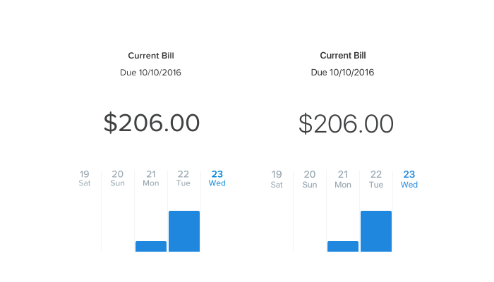
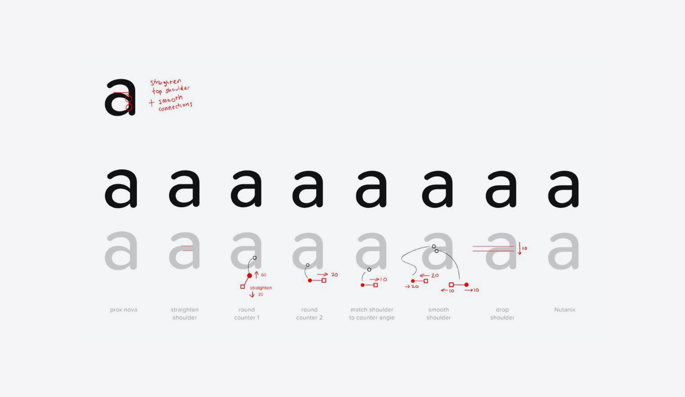
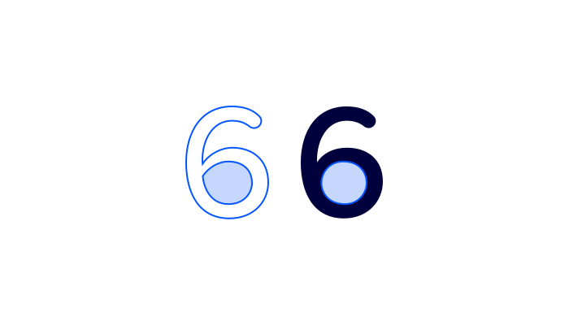

Nutanix Soft
A typeface case study for Nutanix Soft
We created Nutanix Soft in 2016, it has since then, become the main typeface for all our web interfaces. The goal at the time was to improve legibility across different screen resolutions.
Background
In 2015, I evaluated our typeface in as part of creating a new visual direction for our Xi platform. When it came to smaller devices and lower resolution screens, our font became hard to read.
Text and typography often define an interface, the majority of our UI real-state constituted by them, for me it was important to have a well crafted typeface that represented our design principles. I explored alternative typefaces that were known for their approach to legibility in different devices and screen densities to try to find a typeface that could replace proxima nova soft.
After extensive testing on the effects of these in the look and feel and legibility of our products, it became clear that we needed to retain the rounded nature of our typeface, an expresion of brand's pesonality. A decision made early on to bring a slight playfulness to the interface.
It took a several discussions with the larger team, but we decided that creating a new font was the way to go. We started looking for someone that could help creating not only a typeface that retained our product personality, but it that had function and scale too.
The process
There was a lot of work to make the font legible. With Nutanix soft we considered what it takes to take a rounded font like ours and hit that the right balance between, clear shapes and expresiveness.
We drew inspirations from fonts like Proxima Nova and San Fransisco, one brought that sense of familiarity our customers love and know, while to other brought a more modern a clear aesthetic to our products.
Initally we determined which letters had the most issues, we then started focusing on the things that worked on didn't work for each letter. Below an example of the work taht was done to define the connections of our lower case 'a'.
We retouched the... and the apertures of the font, which makes most of the ... letters easier to read.
A big undertaking, took several variations of over 12312321 characters to get it right. We had discussion on even the slightest details, but it guaranteed a strong outcome.
We also took the opportunity to fix a subpixel problem that we had for a while. Our old font would not align veritcally to a container, as we review all this character we fixed that export issue as well.
For our engineering team it was a nightmare since now all the small code hacks needed to be eliminated.
Font Characterisitics
Nutanix Soft is a rounded san-serif typeface with a more geometrical counter space in its letters. This gives the typeface better legibility is lower density displays.
It has 5 different weights from thin to bold. We worked on adding a thing version of the typeface to better adress larger text in our UI.
...
- Pack my box with five dozen liquor jugs
- Pack my box with five dozen liquor jugs
- Pack my box with five dozen liquor jugs
- Pack my box with five dozen liquor jugs
- Pack my box with five dozen liquor jugs
Democratizing Nutanix Soft
For our product team, it was important to distribute the font as much as possible. All designers were able to download Nutanix Soft and start creating interfaces, for the most part the process was gradual as we allowed coexistence in design since we couldn't migrate all designs to use it. But all new ones should be using Nutanix Soft.
The UI 2.0 initiative was also a great way to accelerate the distribution as part of our guidelines. The engineering team spend more time to add the typeface. Once we were confident that we had no projects using the old typeface we stopped support. This had made the process almost invisible for some.
What is next for the typeface
The next stage for the font is to evolve towards becomoing a unified font across product and marketing. Today we approach typography in a different ways and I believe a considerate typeface that is able to cater to both team's goals can drive visual alignment between these groups. Airbnb's Cereal is a great example of a company that was able to succesfully achieved this.
We are also re-evaluating the use of bold in the product overall in conjuction with marketing.
There is a plan to explore more forward looking concepts including how to transform nutanix soft into dynamic type.